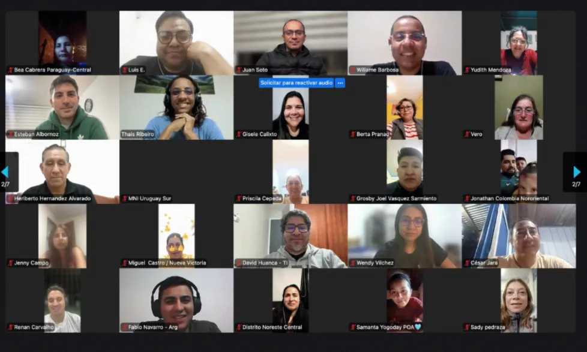
28 de septiembre · MNI
200 líderes en un mismo encuentro
Presidentes de distrito y sus concilios se reunieron en línea, e incluso la Directora Global de MNI los saludó en vivo. No estamos solos: somos un cuerpo con una misma misión.
Somos David, Ruth, Lucas y Mateo. Desde Chile servimos a la Iglesia del Nazareno en toda la región, convencidos de que el ministerio se vive en familia.
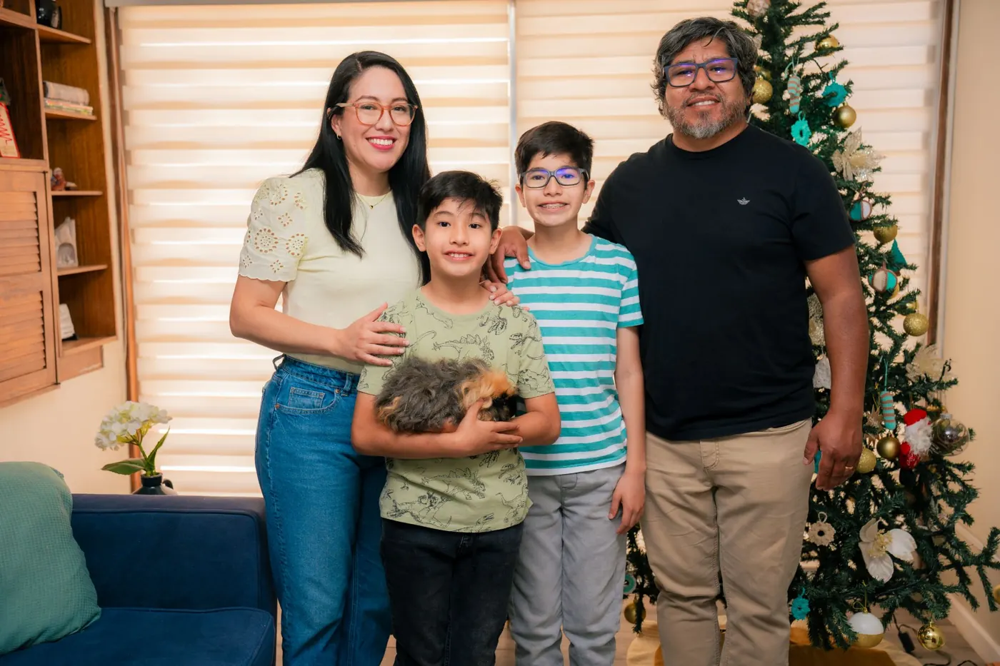
Ruth y David son un matrimonio transcultural: se casaron en diciembre de 2010 y tienen dos hijos, Lucas David (12) y Mateo Benjamín (9). Ellos también son parte de este llamado.
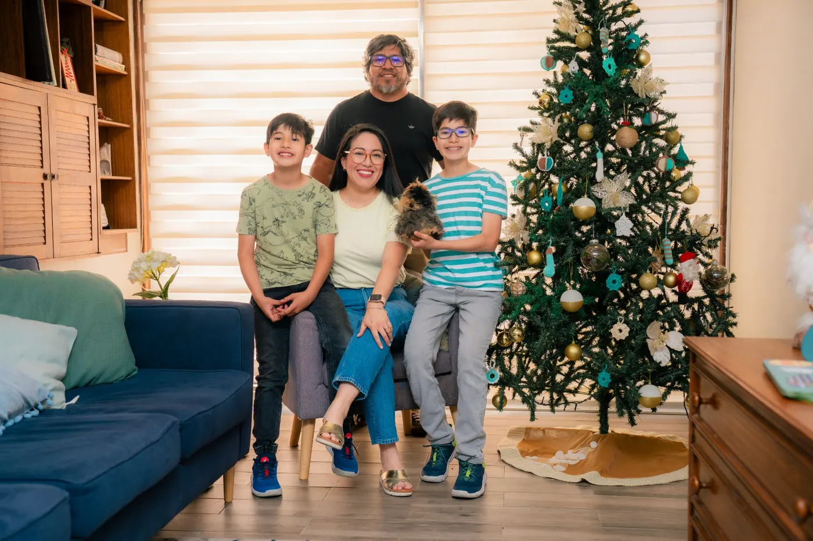
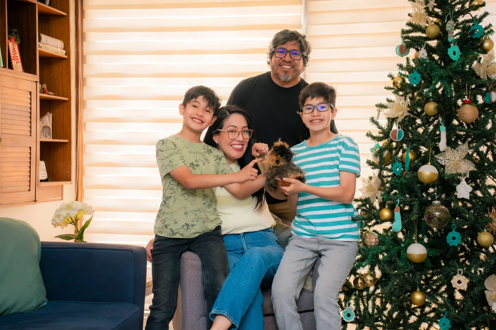
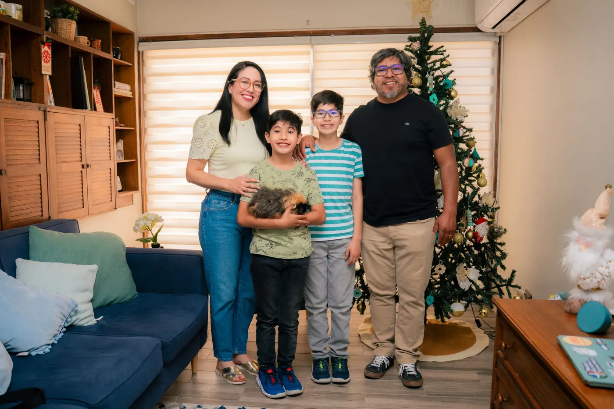
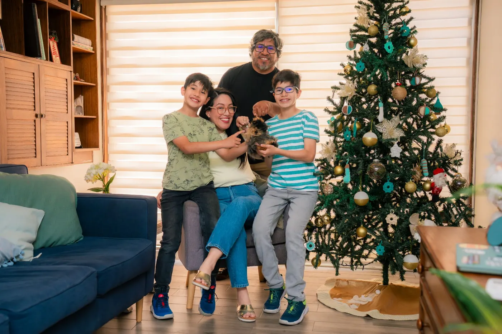
David sirve a la región a través de las Tecnologías de la Información y Ruth como coordinadora regional de MNI. Además, son parte del equipo nacional de ministerios en Chile y coordinan las comunicaciones del país.
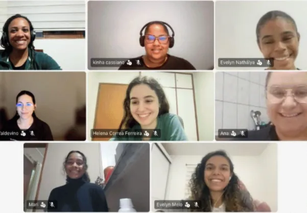
Mentoreo24 sesiones durante un año para jóvenes con llamado misionero, acompañados por misioneros como mentores. En julio comenzó la segunda generación.
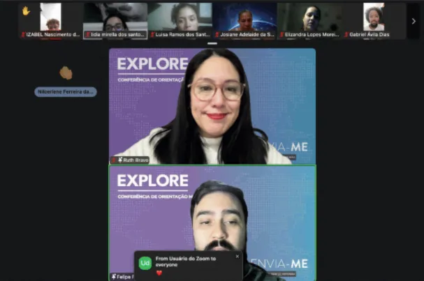
LlamadoUn encuentro en línea, en español y en portugués para Brasil, donde los jóvenes exploran su llamado. Es el primer paso para postular como misioneros, y muchos ya sirven en el campo.
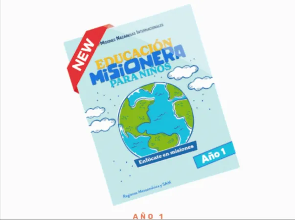
ProyectoNuestro segundo libro misionero para niños. Faltaban recursos para que los más pequeños conozcan la misión de Dios; después del primer libro, vamos por el segundo.
Plataformas para el Seminario Bíblico Nazareno de Chile y los equipos de la región, además de la transmisión del Esgrima Bíblico Infantil Nacional.
«He aquí que yo hago cosa nueva; pronto saldrá a luz; ¿no la conoceréis?»
Cada oración y cada ofrenda sostiene el trabajo en toda América del Sur. Ninguna es pequeña.
Recibe cada mes nuestros motivos de oración y de gratitud, y ora con nosotros por Sudamérica.
Ver las peticiones de este mes →Tu ofrenda, única o mensual, sostiene el ministerio regional y proyectos como el libro «Enfócate en misiones». [Datos bancarios o enlace de donación].
Dar ahora¿Sientes el llamado a las misiones? EXPLORE y el mentoreo AVIVA son el primer paso para jóvenes de toda la región.
Escríbenos →Gracias por sostenernos en oración. Estos son nuestros motivos de este mes.
Pon nuestra tarjeta en tu refrigerador, en tu Biblia o en el mural de tu iglesia, y ora por nosotros en cada cumpleaños.

Presidentes de distrito y sus concilios se reunieron en línea, e incluso la Directora Global de MNI los saludó en vivo. No estamos solos: somos un cuerpo con una misma misión.
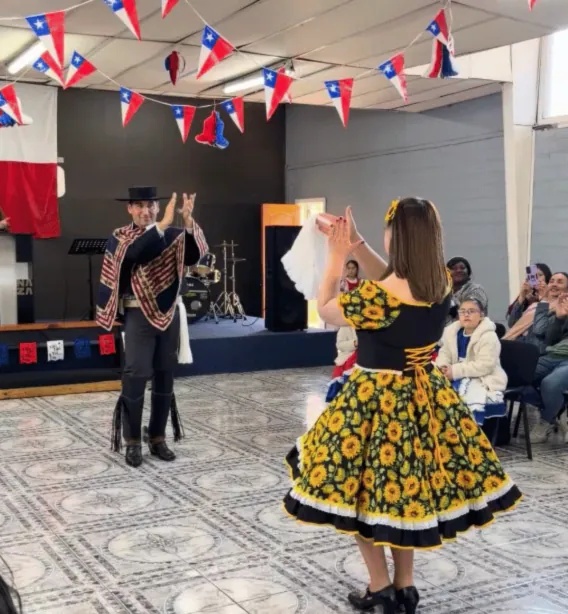
Celebramos con banderas, cuecas y empanadas. Oramos para que el amor de Chile por su patria se refleje en una iglesia que sea luz en cada comunidad.
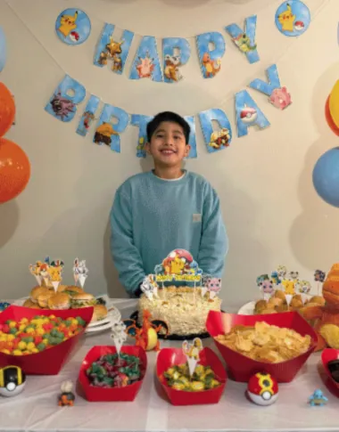
Damos gracias a Dios por su vida y sus locuras. Él también es parte de este llamado y nos recuerda cada día que el ministerio se vive en familia.
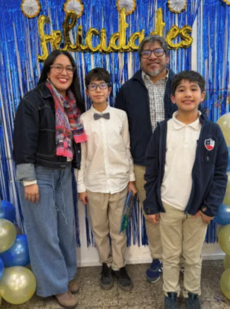
Gracias a Dios, Lucas terminó Elementary school. ¡Estamos expectantes por lo que viene para él en esta nueva temporada!
Recibe nuestro boletín mensual con historias, fotos y peticiones de oración. Sin spam.